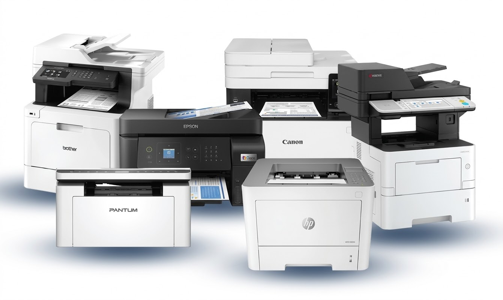

TutorialOutras ImpressorasDrivers para instalação manual de modelos menos frequentes.Baixe o arquivo do modelo desejado, extraia o conteúdo e execute o instalador.BrotherDCP-L5652DNCanonG4110EpsonL120L800L1800L3110L3150L3250L4260M205HP2055DNE42540E52645400P2035M428